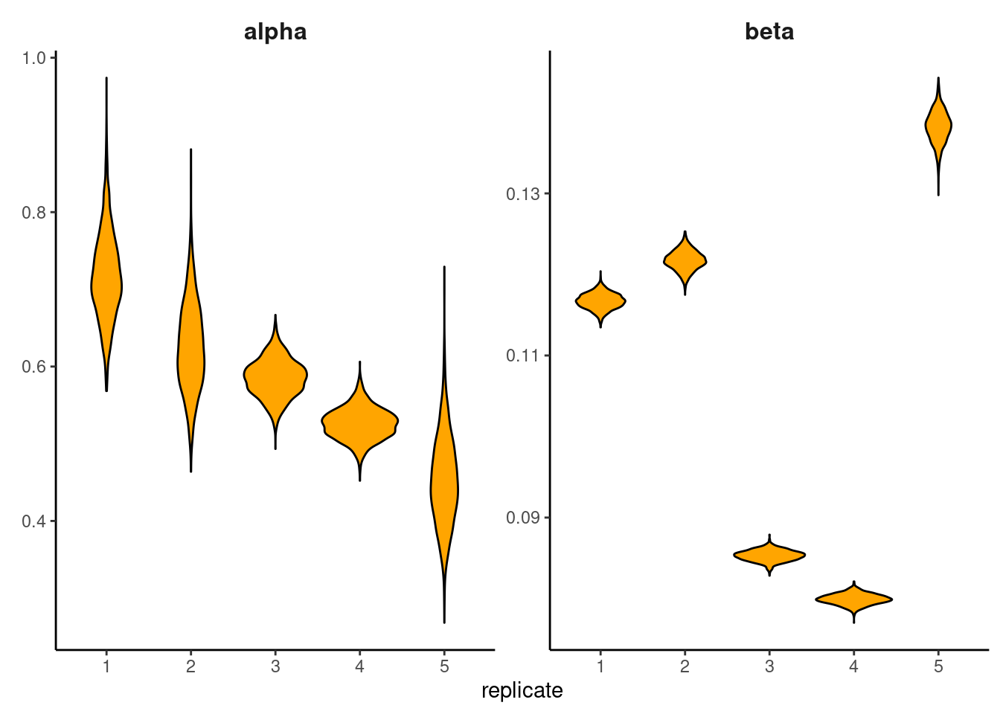

| Study | Mortality | |
|---|---|---|
| Treated | Control | |
| 1 | 3/38 | 3/39 |
| 2 | 7/114 | 14/116 |
| 3 | 5/69 | 11/93 |
| 4 | 102/1533 | 127/1520 |
| 5 | 28/355 | 27/365 |
| 6 | 4/59 | 6/52 |
| 7 | 98/945 | 152/939 |
| 8 | 60/632 | 48/471 |
| 9 | 25/278 | 37/282 |
| 10 | 138/1916 | 188/1921 |
| 11 | 64/873 | 52/583 |
| 12 | 45/263 | 47/266 |
| 13 | 9/291 | 16/293 |
| 14 | 57/858 | 45/883 |
| 15 | 25/154 | 31/147 |
| 16 | 33/207 | 38/213 |
| 17 | 28/251 | 12/122 |
| 18 | 8/151 | 6/154 |
| 19 | 6/174 | 3/134 |
| 20 | 32/209 | 40/218 |
| 21 | 27/391 | 43/364 |
| 22 | 22/680 | 39/674 |
Chapter 17 Problem Sets
Problem 17.1 A meta-analysis of beta blocker trials
Table 1 shows the results of some of the 22 trials included in a meta-analysis of clinical trial data on the effect of beta-blockers on reducing the risk of myocardial infarction. The file hierarchical_betaBlocker.csv contains the full data set.
The aim of this meta-analysis is to determine a robust estimate of the effect of beta-blockers by pooling information from a range of previous studies.
Problem 17.1.1
Start by assuming that the numbers of deaths in the control (\(r_i^c\)) and treated (\(r_i^t\)) groups for each trial are given by binomial distributions of the form:
\[ \begin{aligned} r_i^c &∼ \mathcal{B}(p_i^c , n_i^c),\\ r_i^t &∼ \mathcal{B}(p_i^t , n_t^c), \end{aligned} \]
where (\(n_i^t\), \(n_i^c\)) are the numbers of individuals in the treatment and control data sets, respectively. Further assume that the probabilities of mortality in the treatment and control data sets are given by:
\[ \begin{aligned} \text{logit}(p_i^c) = \mu_i,\\ \text{logit}(p_i^t) = \mu_i + \delta_i,\\ \end{aligned} \] where:
\[ \text{logit}(\mathcal{x}) = \log \left( \frac{\mathcal{x}}{1-\mathcal{x}}\right) \]
and we expect \(δ_i < 0\) if the beta-blockers have the desired effect. We assume the following diffuse priors for the parameters:
\[ \begin{aligned} \mu_i &\sim \mathcal{N}(0,10), \\ \delta_i &\sim \mathcal{N}(0,10), \end{aligned} \]
Estimate the posteriors for \(δ_i\) for the above model using Stan, or otherwise. Note that for this model there is no interdependence between the studies. (Hint: use the Stan binomial_logit function.)
data {
int N; // number of trials
int<lower=0> rc[N];
int<lower=0> nc[N];
int<lower=0> rt[N];
int<lower=0> nt[N];
}
parameters {
vector[N] mu;
vector[N] delta;
}
model {
rc ~ binomial_logit(nc, mu);
rt ~ binomial_logit(nt, mu + delta);
delta ~ normal(0, 10);
mu ~ normal(0, 10);
}The posteriors for \(δ_i\) in this model are fairly wide and contain non-zero densities at zero (Figure 1).
Problem 17.1.2
An alternative framework is a hierarchical model where we assume there to be a common overarching distribution across trials such that \(δ_i ∼ N ( d , σ )\). By assuming the following priors on these parameters estimate this model:
\[ \begin{aligned} d &∼ N (0,10),\\ σ &∼ Cauchy(0,2.5), \hspace{.5cm} \text{for }σ ≥ 0. \end{aligned} \]
Estimate the posteriors for \(δ_i\) using Stan. How do these estimates compare to the non-hierarchical model?
data {
int N; // number of trials
int<lower=0> rc[N];
int<lower=0> nc[N];
int<lower=0> rt[N];
int<lower=0> nt[N];
}
parameters {
real d;
real<lower=0> sigma;
vector[N] mu;
vector[N] delta;
}
model {
rc ~ binomial_logit(nc, mu);
rt ~ binomial_logit(nt, mu + delta);
delta ~ normal(d, sigma);
mu ~ normal(0, 10);
d ~ normal(0, 10);
sigma ~ cauchy(0, 2.5);
}
generated quantities {
real delta_new;
int<lower=0> simTreatMort[N];
int<lower=0> simContrMort[N];
int indicatorTreat[N];
int indicatorContr[N];
delta_new = normal_rng(d, sigma);
for (i in 1:N) {
simTreatMort[i] = binomial_rng(nt[i], inv_logit(mu[i] + delta[i]));
simContrMort[i] = binomial_rng(nc[i], inv_logit(mu[i]));
indicatorTreat[i] = (simTreatMort[i] > rt[i]);
indicatorContr[i] = (simContrMort[i] > rc[i]);
}
}The hierarchical estimates of the effect of the drug are much more concentrated (Figure 1) - by pooling data across all studies we are better able to precisely estimate the effect of the drug. These indicate that the beta-blockers appear to act as desired - decreasing the probability of mortality.
Problem 17.1.3
Using the hierarchical model, estimate the cross-study effect of the beta-blockers. (Hint: use the generated quantities code block.)
Overall we estimate a negative value for \(δ\) (fig-17.1.3-sol). Whilst the posterior does overlap zero, we are fairly confident in concluding that \(δ < 0\).
Problem 17.1.4
For an out-of-sample trial suppose we know that \(μ_i = −2.5\) . Using the cross-study estimates for \(δ\), estimate the reduction in probability for a patient taking the beta-blockers.
This is done by using the inverse-logit transformation (the logistic sigmoid). Essentially you want to evaluate logistic-sigmoid(-2.5) and compare it with logistic-sigmoid(-2.5-delta), across all the samples in your model. This results in a posterior distribution that is peaked at about 0.02 (Figure 3); indicating about a 2% reduction in mortality risk for those patients taking betablockers.
Problem 17.1.5
Estimate a model with a single, constant value of \(δ\) and \(μ\) across all trials. Graph the posterior for \(δ\) , and compare it with the cross-study hierarchical model estimate.
The non-hierarchical model gives us a false confidence in our estimates of \(δ\), by assuming that the data from the individual studies are equivalent (exchangeable). This means that the estimate of \(δ\) obtained is more concentrated than for the hierarchical model (fig-17.1.5-sol).
data {
int N; // number of trials
int<lower=0> rc[N];
int<lower=0> nc[N];
int<lower=0> rt[N];
int<lower=0> nt[N];
}
parameters {
real mu;
real delta;
}
model {
rc ~ binomial_logit(nc, mu);
rt ~ binomial_logit(nt, mu + delta);
delta ~ normal(0, 10);
mu ~ normal(0, 10);
}
generated quantities {
int<lower=0> simTreatMort[N];
int<lower=0> simContrMort[N];
int indicatorTreat[N];
int indicatorContr[N];
for (i in 1:N) {
simTreatMort[i] = binomial_rng(nt[i], inv_logit(mu + delta));
simContrMort[i] = binomial_rng(nc[i], inv_logit(mu));
indicatorTreat[i] = (simTreatMort[i] > rt[i]);
indicatorContr[i] = (simContrMort[i] > rc[i]);
}
}Problem 17.1.6
Carry out appropriate posterior predictive checks on the homogeneous and hierarchical models, and hence conclude the preferred modelling choice.
For both models we find that there are a range of Bayesian \(p values\) near 0 or 1 for the homogeneous (pooled) model, whereas this is not the case for the hierarchical model (Figure 5) Intuitively - by assuming that there was no difference between the data from each study - the homogeneous coefficient model is unable to replicate the degree of variation we see in the real data. We therefore prefer the hierarchical model.
Problem 17.2 I can’t get no sleep
The data are from a study described in Belenky et al. that measured the effect of sleep deprivation on cognitive performance. There were 18 subjects chosen from a population of interest (lorry drivers) who were restricted to 3 hours of sleep during the trial. On each day of the experiment their reaction time to a visual stimulus was measured. The data for this example is contained within evaluation_sleepstudy.csv, consisting of three variables, Reaction, Days and Subject ID, which measure the reaction time of a given subject on a particular day.
A simple model that explains the variation in reaction times is a linear regression model of the form:
\[ R ( t ) ∼ N ( α + β t , σ ) , \]
where \(R ( t )\) is the reaction time on day \(t\) of the experiment across all observations.
Problem 17.2.1
Assuming \(\mathcal{N}(0,250)\) priors on both \(\alpha\) and \(β\), code up the above model in Stan. Use it to generate 1000 samples per chain, across four chains. Has the sampling algorithm converged?
data {
int N; // number of observations
matrix[N,2] X; // ones + days of sleep deprivation
vector[N] R; // reaction times
}
parameters {
vector[2] gamma;
real<lower=0> sigma;
}
model {
R ~ normal(X * gamma, sigma);
gamma ~ normal(0, 250);
}
generated quantities {
real R_Simulated[N];
R_Simulated = normal_rng(X * gamma, sigma);
}| term | rhat |
|---|---|
| gamma[1] | 1.00 |
| gamma[2] | 1.00 |
| sigma | 1.00 |
Problem 17.2.2
Plot the posterior samples for α and β. What is the relationship between the two variables, and why?
There is a strong negative correlation between the estimates of these two variables. This is because to generate a line going through the centre of the dataset, if the intercept increases, the gradient must decrease (Figure 6).
Problem 17.2.3
By using the generated quantities code block or otherwise, generate samples from the posterior predictive distribution. By overlaying the real time series for each individual on a graph of the posterior predictive, comment on the fit of the model to data.
The posterior predictive distribution - whilst being a reasonable fit to the data for the anonymous data - is not able to fit well the data at the individual level (Figure 7).
Problem 17.2.4
Fit a model with separate (\(α\), \(β\) ) for each individual in the data set. Use separate and independent \(\mathcal{N}(0,250)\) priors for the parameters. Again use 1000 samples per chain over four chains.
data {
int N; // number of observations
int S; // number of individuals in the study
vector[N] t; // days of sleep deprivation
vector[N] R; // reaction times of individuals in the study
int subject[N]; // subject ID
}
parameters {
real alpha[S];
real beta[S];
real<lower=0> sigma;
}
model {
for (i in 1:N) {
R[i] ~ normal(alpha[subject[i]] + beta[subject[i]] * t[i], sigma);
}
alpha ~ normal(0, 250);
beta ~ normal(0, 250);
sigma ~ normal(0, 50);
}
generated quantities {
vector[N] R_Simulated;
for (i in 1:N) {
R_Simulated[i] = normal_rng(alpha[subject[i]] + beta[subject[i]] * t[i], sigma);
}
}Problem 17.2.5
Compute the posterior mean estimates of the \(β\) parameters for the new heterogeneous parameters model. How do these compare to the single \(β\) estimate obtained for the homogeneous model?
The homogeneous estimate is about 10.46, with the heterogeneous estimates ranging from -2.69 (for subject 335) to 21.96 (for subject 308). Overall the heterogeneous estimates should have a mean that is roughly similar to the single estimate (it’s not exactly so, 10.63).
Problem 17.2.6
Using the generated quantities code block or otherwise, generate samples from the posterior predictive distribution. By comparing individual subject data to the posterior predictive samples, comment on the fit of the new model.
The heterogeneous coefficients model is able to fit the data much more effectively at the individual data (Figure 8). This is unsurprising - essentially we may be guilty of overfitting the model to the data.
Problem 17.2.7
Partition the data into two subsets: a training set (of subjects 1–17) and a testing set (of subject 18 only). By fitting both the heterogeneous and homogeneous coefficients models to the training sets, compare the performance of each model on predicting the test set data.
For the heterogeneous model there is really only one way to generate predictions for the test set - sample a value of the parameters from the priors, and using these parameter values to generate predictive datasets. Because the priors are wide this actually produces very poor predictions (Figure 9 right).
The homogeneous coefficients model however performs much better as is much more generalisable to new datasets. Intuitively the heterogeneous coefficients model is overfit to the data (Figure 9 left).
data {
int N; // number of observations in training set
int S; // number of individuals in training set
vector[N] t; // days of sleep deprivation in training set
vector[N] R; // reaction times of individuals in in training set
int subject[N]; // subject ID
int N2; // number of data points in the test set
vector[N2] t2; // time obs in test set
}
parameters {
real alpha[S];
real beta[S];
real<lower=0> sigma;
}
model {
for (i in 1:N) {
R[i] ~ normal(alpha[subject[i]] + beta[subject[i]] * t[i], sigma);
}
alpha ~ normal(0, 250);
beta ~ normal(0, 250);
sigma ~ normal(0, 50);
}
generated quantities {
vector[N2] R_Simulated;
real aAlpha;
real aBeta;
aAlpha = normal_rng(0, 250);
aBeta = normal_rng(0, 250);
for (i in 1:N2) {
R_Simulated[i] = normal_rng(aAlpha + aBeta * t2[i], sigma);
}
}Problem 17.2.8
Alternatively, we can fit a hierarchical model to the data which (hopefully) captures some of the best elements of each of the aforementioned models. Fit such a model in Stan using normal priors for \(α_i\) and \(β_i\) and appropriate priors on the hyper-parameters of these distributions.
The posterior distribution for the parameters exhibits shrinkage towards the grand mean (Figure 10). In general those parameter estimates with a. the highest uncertainty, and b. lie furthest away from the mean, are shrunk the most in hierarchical models.
data {
int N; // number of observations
int S; // number of individuals in the study
vector[N] t; // days of sleep deprivation
vector[N] R; // reaction times of individuals in the study
int subject[N]; // subject ID
}
parameters {
real alpha[S];
real beta[S];
real<lower=0> sigma;
real a;
real b;
real c;
real d;
}
model {
for (i in 1:N) {
R[i] ~ normal(alpha[subject[i]] + beta[subject[i]] * t[i], sigma);
}
a ~ normal(100, 100);
b ~ cauchy(0, 5);
c ~ normal(10, 5);
d ~ cauchy(0, 1);
alpha ~ normal(a, b);
beta ~ normal(c, d);
sigma ~ normal(0, 50);
}
generated quantities {
real aBeta;
aBeta = normal_rng(c, d);
}Problem 17.2.9
Graph the posterior distribution for \(β\) for another individual (not in the original data set). How does this distribution compare to the value of \(β\) obtained from the homogeneous coefficient model?
The posterior distribution for \(β\) has a mean of 10.2 (about the same as the original homogeneous estimate), but is wider (Figure 11).
Problem 17.3 Hierarchical ODEs: bacterial cell population growth
The file hierarchical_ode.csv contains data for five replicates of an experiment in which bacterial cell population numbers were measured over time. The following model for bacterial population size is proposed to explain the data:
\[ \frac{\partial{N}}{\partial{t}} = \alpha N(1-\beta N) \]
However, measurement of bacterial cell numbers is subject to random, uncorrelated measurement error:
\[ N^* ( t ) ∼ \mathcal{N} ( N ( t ), σ ) , \]
where \(N^* ( t )\) is the measured number of cells, and \(N ( t )\) is the true population size. Finally, we suppose that the initial number of bacterial cells is unknown, and hence must be estimated. Further we assume the following priors:
\[ \begin{aligned} α &∼ N (0,2), \\ β &∼ N (0,2), \\ σ &∼ Cauchy(0,1), \\ N(0) &∼ N (5,2) , \end{aligned} \] where all parameters have a lower value of 0.
Problem 17.3.1
Write a Stan function that returns \(\frac{\partial{N}}{\partial{t}}\) . Hint 1: this will need to be done within the functions block at the top of the Stan file. Hint 2: the function must have a structure:
real[] bacteria_deriv(real t,real[] y,real[] theta,real[] x_r,int[] x_i)where the variables \(x_i\) and \(x_r\) are not used here, but nonetheless need to be defined:
transformed data {
real x_r[0];
int x_i[0];
}Problem 17.3.2
Estimate a model where the parameters ( \(α\) , \(β\) ) are assumed to be the same across all experimental replicates.
functions {
real[] bacteria_deriv(real t,real[] y,real[] theta,real[] x_r,int[] x_i) {
real dydt[1];
dydt[1] = theta[1] * y[1] * (1 - theta[2] * y[1]);
return dydt;
}
}
data {
int<lower=1> T;
int<lower=0> N;
real t0;
real ts[T];
matrix[T,N] y;
}
transformed data {
real x_r[0];
int x_i[0];
}
parameters {
real<lower=0, upper=2> theta[2]; // contains parameters (alpha,beta)
real<lower=0> sigma;
real<lower=0, upper=10> y0[1];
}
model {
real y_hat[T, 1];
sigma ~ cauchy(0, 1);
theta ~ normal(0, 2);
y0 ~ normal(5, 2);
y_hat = integrate_ode(bacteria_deriv, y0, t0, ts, theta, x_r, x_i);
for (i in 1:N)
for (t in 1:T)
y[t, i] ~ normal(y_hat[t, 1], sigma);
}
generated quantities {
vector[N * T] logLikelihood;
int k;
real y_hat[T, 1];
k = 1;
y_hat = integrate_ode(bacteria_deriv, y0, t0, ts, theta, x_r, x_i);
for (i in 1:N) {
for (t in 1:T) {
logLikelihood[k] = normal_log(y[t, i], y_hat[t, 1], sigma);
k = k + 1;
}
}
}The posteriors for (\(α\), \(β\)) are shown in Figure 12.
Problem 17.3.3.
By graphing the data, or otherwise, comment on the assumption of a common (\(α\), \(β\)) across all replicates.
There is quite a clear variability between the replicates across different experiments (Figure 13). This makes the assumption of common parameter values across all replicates look quite weak. An alternative here would be to do some posterior predictive checks, but this isn’t really needed here to be honest since the raw data plots are illuminating.
Problem 17.3.4
Now estimate a model that estimates separate values for ( \(α\) , \(β\) ) across all replicates. Graph the posterior distribution for each parameter.
There is considerable heterogeneity in posterior estimates of (\(α\), \(β\)) (Figure 14).
functions {
real[] bacteria_deriv(real t,real[] y,real[] theta,real[] x_r,int[] x_i) {
real dydt[1];
dydt[1] = theta[1] * y[1] * (1 - theta[2] * y[1]);
return dydt;
}
}
data {
int<lower=1> T;
int<lower=0> N;
real t0;
real ts[T];
matrix[T,N] y;
}
transformed data {
real x_r[0];
int x_i[0];
}
parameters {
real<lower=0, upper=2> theta[N, 2];
real<lower=0> sigma;
real<lower=0, upper=10> y0[1];
}
model {
real y_hat[T, 1];
sigma ~ cauchy(0, 1);
y0 ~ normal(5, 2);
for (i in 1:N) {
theta[i] ~ normal(0, 2);
y_hat = integrate_ode(bacteria_deriv, y0, t0, ts, theta[i], x_r, x_i);
for (t in 1:T)
y[t, i] ~ normal(y_hat[t, 1], sigma);
}
}
generated quantities {
vector[N * T] logLikelihood;
int k;
real y_hat[T, 1];
k = 1;
for (i in 1:N) {
y_hat = integrate_ode(bacteria_deriv, y0, t0, ts, theta[i], x_r, x_i);
for (t in 1:T) {
logLikelihood[k] = normal_log(y[t, i], y_hat[t, 1], sigma);
k = k + 1;
}
}
}
Problem 17.3.5
Estimate a hierarchical model assuming the following priors:
\[ \begin{aligned} α &∼ Γ( a , b ) ,\\ β &∼ Γ( c , d ) ,\\ a &∼ N (20,5),\\ b &∼ N (40,5),\\ c &∼ N (10,3),\\ d &∼ N (100,5). \end{aligned} \] Compare your estimates of ( \(α\) , \(β\) ) with those from the completely heterogeneous model.
There is very limited shrinkage versus the purely heterogeneous model (Figure 14 versus Figure Figure 15.) This is because there is quite a lot of data for each replicate.
functions {
real[] bacteria_deriv(real t,real[] y,real[] theta,real[] x_r,int[] x_i) {
real dydt[1];
dydt[1] = theta[1] * y[1] * (1 - theta[2] * y[1]);
return dydt;
}
}
data {
int<lower=1> T;
int<lower=0> N;
real t0;
real ts[T];
matrix[T,N] y;
}
transformed data {
real x_r[0];
int x_i[0];
}
parameters {
real<lower=0> a1[2];
real<lower=0> a2[2];
real<lower=0, upper=2> theta[N, 2];
real<lower=0> sigma;
real<lower=0, upper=10> y0[1];
}
model {
real y_hat[T, 1];
a1[1] ~ normal(20, 5);
a1[2] ~ normal(40, 5);
a2[1] ~ normal(10, 3);
a2[2] ~ normal(100, 5);
sigma ~ cauchy(0, 1);
y0 ~ normal(5, 2);
for (i in 1:N) {
theta[i, 1] ~ gamma(a1[1], a1[2]);
theta[i, 2] ~ gamma(a2[1], a2[2]);
y_hat = integrate_ode(bacteria_deriv, y0, t0, ts, theta[i], x_r, x_i);
for (t in 1:T)
y[t, i] ~ normal(y_hat[t, 1], sigma);
}
}
generated quantities {
vector[N * T] logLikelihood;
int k;
real y_hat[T, 1];
real aTheta[2];
real y_hat_overall[T, 1];
aTheta[1] = gamma_rng(a1[1], a1[2]);
aTheta[2] = gamma_rng(a2[1], a2[2]);
y_hat_overall = integrate_ode(bacteria_deriv, y0, t0, ts, aTheta, x_r, x_i);
k = 1;
for (i in 1:N) {
y_hat = integrate_ode(bacteria_deriv, y0, t0, ts, theta[i], x_r, x_i);
for (t in 1:T) {
logLikelihood[k] = normal_log(y[t, i], y_hat[t, 1], sigma);
k = k + 1;
}
}
}

Problem 17.3.6
Estimate the overall (\(α\) , \(β\)) for the hierarchical model. How do these compare to the pooled model estimates?
The estimates reflect greater uncertainty compared to the pooled model (Figure 16 versus Figure 12). This is desirable since the pooled model understates uncertainty.
Problem 17.3.7
By holding out one of your data sets, compare the predictive performance of each model.
TODO
Problem 17.4 Bowel cancer model selection
The file hierarchical_cancer.csv contains (fictitious) data on the population size of a given county (\(N\)) and the number of bowel cancer cases in that county (\(X\)). In this question we aim to build a model to estimate the underlying rate of cancer occurrence \(λ\).
Problem 17.4.1
A simple model is to assume that cancer occurrence is an independent event, and hence we use the model:
\[ X_i ∼ Poisson( N_i \times λ ) , \]
where \(N_i\) is the population in county \(i\), and \(X_i\) is the number of cases of bowel cancer in the same county. Write a model in Stan to estimate the underlying rate of bowel cancer occurrence (\(λ\)), where we assume a prior of the form \(λ ∼ N (0.5,0.5)\).
Problem 17.4.2
Using the generated quantities block record the estimated log-likelihood of each data point, for each posterior sample of \(λ\).
Problem 17.4.3
By using Stan’s optimizing function to obtain the MAP estimate of \(λ\), estimate the expected log pointwise predictive density (\(elpd\)) via a deviance information criterion (DIC) method:
\[ \widehat{elpd} = \log p(X \mid \hat{\theta}_{\text{Bayes}}) - 2 \, \mathrm{var}_{s=1}^S \log p(X \mid \theta_s) \]
where \(\mathrm{var}_{s=1}^S \log p(X \mid \theta_s)\) is the variance in log-likelihood for all data points across \(S\) posterior draws. (Hint: the latter part of the formula requires that we estimate the model by sampling.)
data {
int K;
vector[K] N;
int X[K];
}
parameters {
real<lower=0> lambda;
}
model {
X ~ poisson(lambda * N);
lambda ~ normal(.5, .5);
}
generated quantities{
vector[K] lLoglikelihood;
for(i in 1:K) {
lLoglikelihood[i] = poisson_lpmf(X[i] | N[i] * lambda);
}
}The \(\widehat{elpd}\) DIC estimate is \(\approx\) -3996.
Problem 17.4.4
Estimate \(elpd\) using the Akaike information criterion (AIC) method. (Hint: use Stan’s optimizing function where the Stan file has had the prior commented out, to achieve the maximum likelihood estimate of the log-likelihood.)
The AIC method penalises the estimated log-likelihood by one since there is only a single parameter in the model which is \(\approx\) -3996.
Problem 17.4.5
Either manually or using the loo package in R, estimate elpd by a Watanabe–Akaike information criterion (WAIC) method. If you choose the manual method, this can be done with the formula:
\[ \widehat{\text{elpd}} = \underbrace{\sum_{i=1}^{N} \log \left( \frac{1}{S} \sum_{s=1}^{S} p(X_i \mid \theta_s) \right)}_{\text{log pointwise predictive density}} - p_{\text{WAIC}}, \]
where:
\[ p_{\text{WAIC}} = \sum_{i=1}^{N} \mathrm{var}_{s=1}^{S} \left[ \log (X_i \mid \theta_s) \right]. \]
The \(\widehat{elpd}\) WAIC estimate is \(\approx\) -3998.
Problem 17.4.6
By partitioning the data into 10 folds of training and testing sets (where one data point occurs in each testing set once only), estimate the out-of-sample predictive capability of the model. (Hint 1: in R use the Caret package’s createFolds to create 10 non-overlapping folds. Hint 2: adjust your Stan program to calculate the log-likelihood on the test set.)
data {
int KTrain;
vector[KTrain] NTrain;
int XTrain[KTrain];
int KTest;
vector[KTest] NTest;
int XTest[KTest];
}
parameters {
real<lower=0> lambda;
}
model {
XTrain ~ poisson(lambda * NTrain);
lambda ~ normal(.5, .5);
}
generated quantities{
vector[KTest] lLoglikelihood;
for(i in 1:KTest) {
lLoglikelihood[i] = poisson_lpmf(XTest[i] | NTest[i] * lambda);
}
}TODO